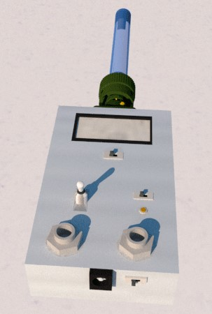
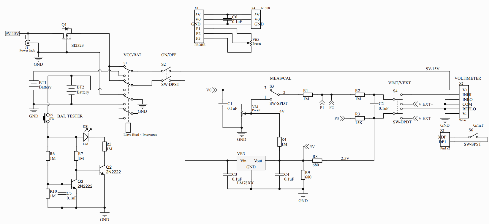
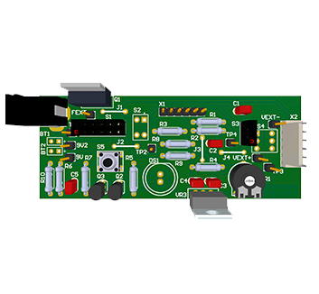

Gaussmeter
1Q - 2021
Abstract: This document describes the design of a fluxmeter (Gaussmeter) that covers a measurement range from 2 Gauss to 2000 Gauss using different measurement tips. This paper explains both the theoretical aspect of the operation of the device and the circuit development and construction procedure.
 The topology used in the design is the Hall effect. This occurs when a magnetic field is applied at right angles to the current flow in a thin film where an electric field is generated, which is mutually perpendicular to the current and the magnetic field and which is directly proportional to the product of the current density and the magnetic induction.
 The development consists of a schematic design beside a PCB (Printed Board Circuit) with the corresponding 3D model, also a price list is given. The gaussmeter design brings the posibility to use an internal 9V Battery or external voltage supply with an inverse voltage circuit protection. A battery check with a LED is applied, when the level is below 6.5 V the orange LED will turn up. Also, a calibration system is employed to ensure the best measurement with these components. The technical specification provides a total accuracy of around 1% of the reading value, a maximum frequency of 20 kHz, and a temperature range from 0°C to 50C°.